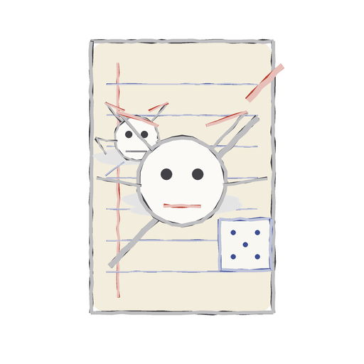
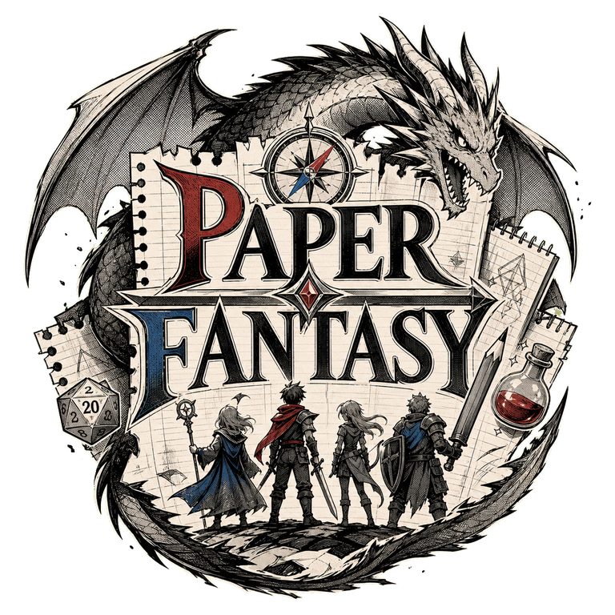
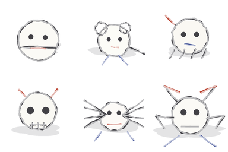
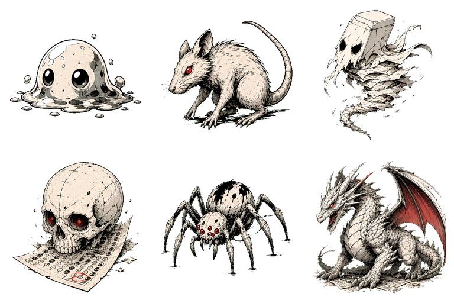
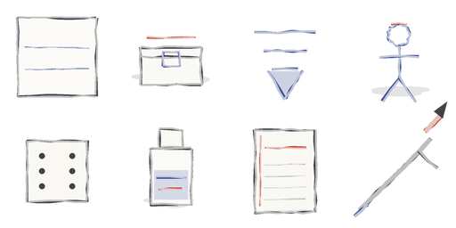
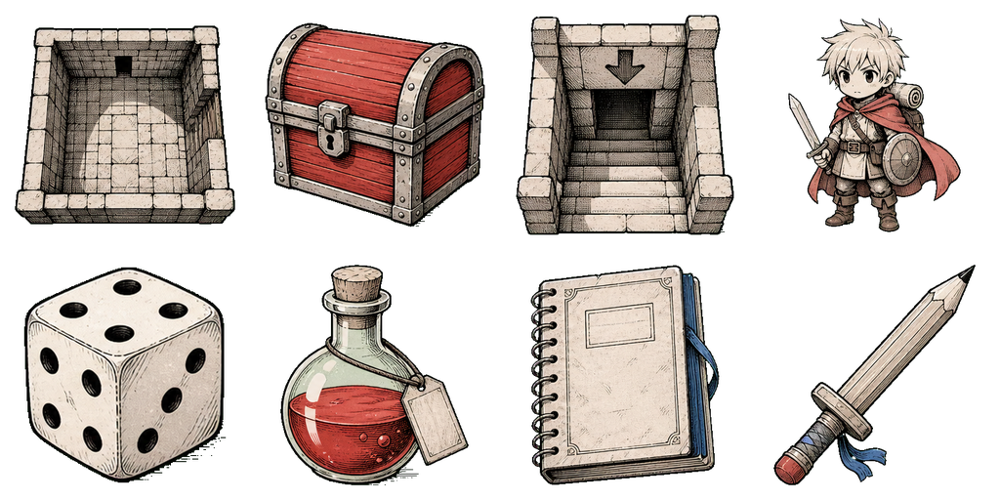

ทิศทางการออกแบบโดย Claude
รอบแรกปูธีมสมุดโน้ตลับมาเลย: แอบเล่นในห้องเรียน, สำรวจแผนที่ริมขอบกระดาษ, สู้กันด้วยดินสอ, แถมมีครูคอยจับผิดอีก โคตรลุ้น!
หน้าเอาไว้โชว์เทียบกันดิ ซ้ายเป็นสเก็ตช์ดินสอดิบๆ ในสมุดโน้ต ขวาเป็นงานหมึกมังงะที่วิ่งในเกมจริง เจ๋งป่ะล่ะ
จริงๆ ไอเดียร่างกระดาษในห้องเรียนของตัวแรกนี่มาถูกทางละนะ ตัวใหม่นี่ยังได้ฟีลสมุดแฟนตาซีอยู่ แต่ปั้นเส้นหน้าไทเติล มอนสเตอร์ กับของต่างๆ ให้ดูชัดขึ้นเวลาเล่นบนมือถือ แถมได้ฟีลปกมังงะโคตรๆ
เบื้องหลังความพยายามทำตัวเดโม่นี้: คิดคอนเซปต์ก่อน -> แอบเขียน canvas ให้พอเล่นได้ -> แล้วค่อยรัน imagen เอาภาพเนียนๆ มาใช้จริงทีหลัง
รอบแรกปูธีมสมุดโน้ตลับมาเลย: แอบเล่นในห้องเรียน, สำรวจแผนที่ริมขอบกระดาษ, สู้กันด้วยดินสอ, แถมมีครูคอยจับผิดอีก โคตรลุ้น!
ได้ Codex มาช่วยตบๆ จนเป็นตัวต้นแบบ HTML/canvas ไฟล์เดียวจบ มีลูปเกม, ออโต้เซฟ, ปุ่มทัชสกรีน, ฉากสู้กัน, แล้วก็ระบบเผื่อรูปไม่ขึ้นด้วยล่ะ
รูปสเก็ตช์ขยุกขยิกกลายเป็นงานหมึกมังงะระดับเทพ ทั้งไทเติล มอนสเตอร์ และ atlas ดันเจี้ยน แต่ยังได้อารมณ์กระดาษยับๆ กับธีมแอบเล่นในห้องเหมือนเดิมเลย
ตัวเกม index.html ที่เล่นได้จริง, หน้าเปรียบเทียบภาพ, source assets, แล้วก็พวกเวอร์ชันเก่าๆ ที่เซฟเก็บไว้ ตอนนี้โยนขึ้น Railway กับ GitHub หมดแล้วจ้า


มีอะไรเปลี่ยนไปบ้างโลโก้ใหม่อันนี้เส้นเข้มสะใจ จัดวางองค์ประกอบแฟนตาซีได้เฟี้ยวขึ้นเยอะ โผล่มาแวบแรกก็รู้เลยว่าเกมอะไร!


มีอะไรเปลี่ยนไปบ้างมอนสเตอร์ตัวใหม่ยังเป็นรูปสเก็ตช์บนกระดาษอยู่ แต่ดูโหดขึ้นเยอะ มีบารมีบอสใหญ่ขึ้น แถมมองฟอร์มง่ายแม้อยู่บนจอมือถือเล็กๆ


มีอะไรเปลี่ยนไปบ้างพวกไอเทมกับฉากใหม่ช่วยให้ดูออกง่ายขึ้นเยอะว่าตรงไหนห้อง, ทางออก, ไอเทม หรือของที่ไว้ใช้สู้ แต่ยังได้ฟีลเนื้อกระดาษตรงขอบๆ อยู่เหมือนเดิมนะ